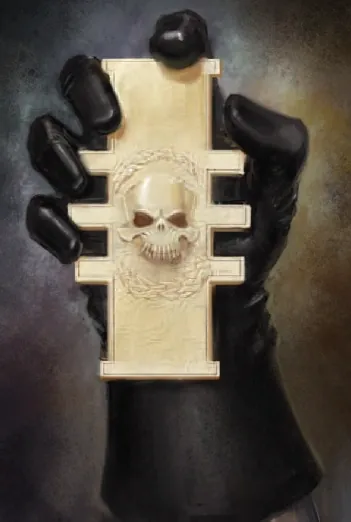
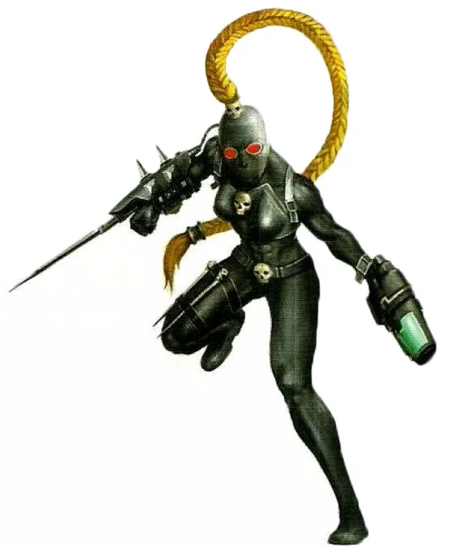
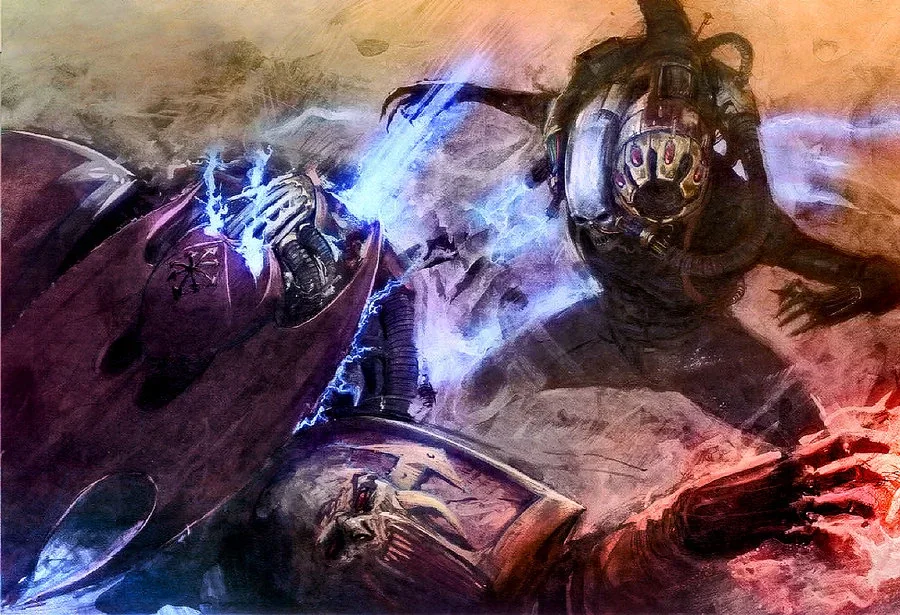
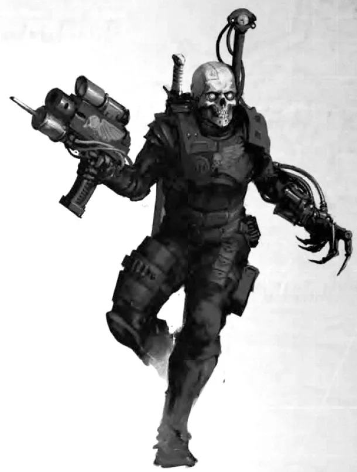
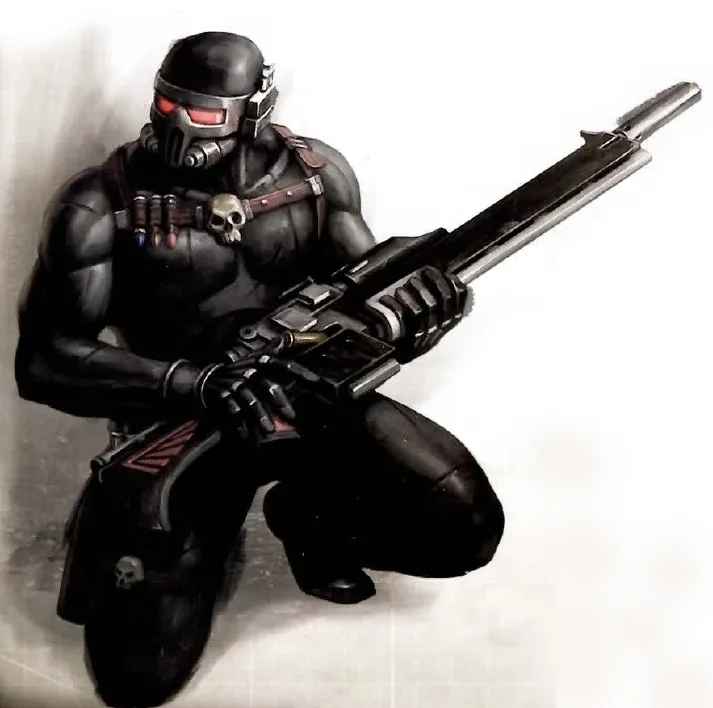
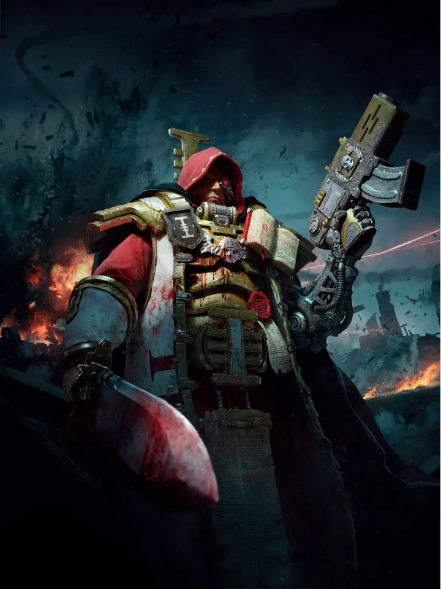
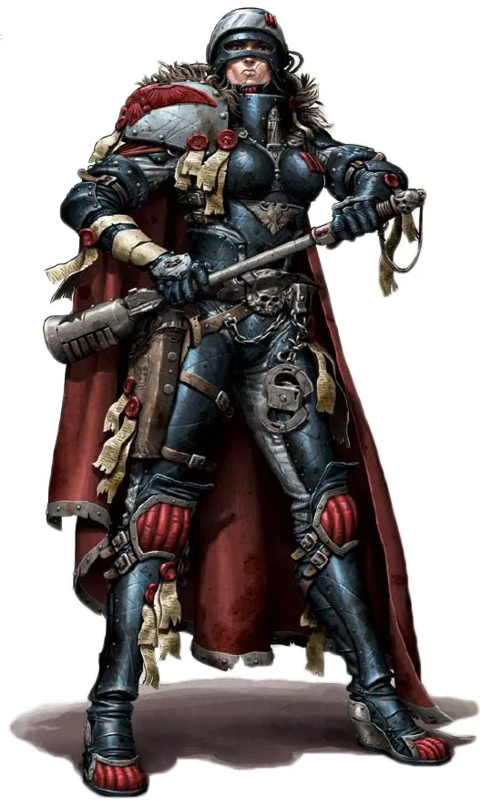
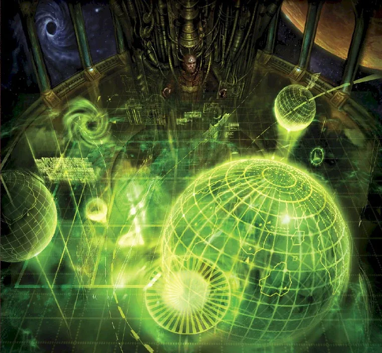
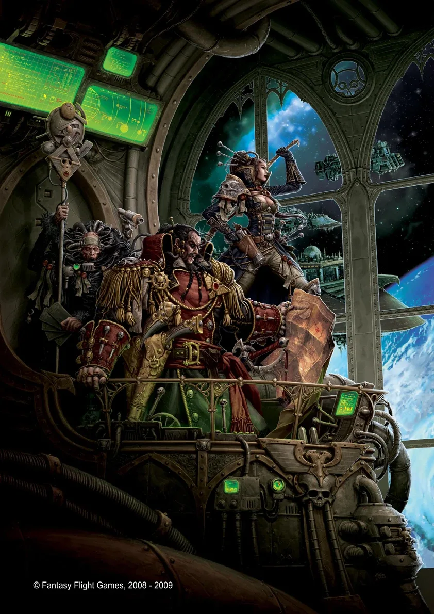

01ภาพรวม
Inquisitor, มือสังหาร และหน่วยพิเศษ — ผู้ทำงานในเงามืดเพื่อปกป้องจักรวรรดิ
02ต้นกำเนิด
Inquisition ถูกก่อตั้งโดย Malcador the Sigillite ในยุค Horus Heresy เพื่อตามล่าภัยที่มองไม่เห็น ส่วน Officio Assassinorum คือสำนักมือสังหารของจักรวรรดิ ที่ขึ้นตรงต่อสภาสูงของ Terra
03เนื้อเรื่องเจาะลึก
ผู้เฝ้าจักรวรรดิในเงามืด
Inquisition ถูกตั้งขึ้นหลัง Heresy โดย Malcador เพื่อค้นหาภัยที่แอบแฝงในจักรวรรดิ แบ่งเป็น Ordo Malleus, Hereticus, Xenos และ Ordo ย่อยอีกมาก Inquisitor แต่ละคนมีวิธีคิดต่างกัน ตั้งแต่ Puritan ที่เคร่งครัดไปจนถึง Radical ที่ยอมใช้พลังของศัตรู
Officio Assassinorum
สำนักนักฆ่าของจักรวรรดิ มีหลายวัด (Temple) แต่ละวัดเชี่ยวชาญวิธีต่างกัน นักฆ่าถูกฝึกตั้งแต่เด็กและถูกส่งไปกำจัดเป้าหมายที่กองทัพทั้งกองทำไม่ได้
04นิสัยและวัฒนธรรม
- Inquisitor มีอำนาจแทบไร้ขีดจำกัด สั่งทำลายดาวทั้งดวงได้ (Exterminatus)
- แบ่งเป็น Ordo หลัก: Malleus (ปีศาจ), Hereticus (ผู้นอกรีต), Xenos (เอเลียน)
- มีทั้งฝ่ายหัวอนุรักษ์ (Puritan) และฝ่ายหัวรุนแรงที่ใช้ศัตรูสู้ศัตรู (Radical)
05จุดที่น่าสนใจ
- สำนักมือสังหาร: Vindicare (สไนเปอร์), Callidus (แปลงร่าง), Eversor (คลั่ง), Culexus (ต่อต้านพลังจิต)
- มือสังหาร Culexus เคยสังหาร Aun'Va ผู้นำ T'au
06ความสามารถพิเศษ
สิ่งที่ทำให้ Imperial Agents แตกต่างจากทัพอื่น — ทั้งพลังที่ติดตัวมาทั้งเผ่า/ทัพ และความสามารถของบุคคลสำคัญ
ของทั้งเผ่า/ทัพ

Inquisitorial Rosette — อำนาจไร้ขีดจำกัด
Inquisitor แสดงเหรียญ Rosette แล้วสั่งใครก็ได้ในจักรวรรดิ ยึดกองทัพ ประกาศ Exterminatus (ทำลายดาวทั้งดวง) หรือประหารผู้ว่าการดาว ขึ้นกับเพียงจักรพรรดิเท่านั้น

Callidus — แปลงร่างเป็นใครก็ได้
ใช้ยา Polymorphine เปลี่ยนรูปร่างหน้าตาเลียนแบบเหยื่อ แฝงตัวใกล้เป้าหมายแล้วลอบสังหาร

Culexus — ดูดพลังจิต
เกิดมาเป็น Pariah (ไร้วิญญาณใน Warp) ทำให้ผู้ใช้พลังจิตเจ็บปวดและอ่อนแรงเมื่อเข้าใกล้ คนทั่วไปรู้สึกขนลุกเมื่ออยู่ใกล้

Eversor — ยาคลั่ง
ร่างกายเต็มไปด้วยยากระตุ้น Frenzon เมื่อตายร่างจะระเบิดทำลายทุกสิ่งรอบข้าง

Vindicare — ยิงเป้าเดียวไม่พลาด
ใช้ปืน Exitus Rifle ยิงเป้าหมายจากระยะหลายกิโลเมตร กระสุนพิเศษเจาะโล่พลังงานได้
ของบุคคลสำคัญ

Gregor Eisenhorn
Inquisitor ที่เปลี่ยนเป็น Radicalเริ่มจาก Puritan ที่เกลียด Chaos แต่ค่อย ๆ ใช้พลังของศัตรู จนสุดท้ายถูก Inquisition ตามล่าเสียเอง ตัวเอกนิยายชุดดังของ Dan Abnett

Gideon Ravenor
จิตที่แรงกว่าร่างลูกศิษย์ของ Eisenhorn ที่ร่างกายถูกเผาเกือบหมด อยู่ในเก้าอี้กล แต่พลังจิตทรงพลังจนควบคุมร่างคนอื่นได้

Fidus Kryptman
ผู้สร้าง "Kryptman's Void"Inquisitor ผู้ค้นพบ Tyranids คนแรก ๆ และสั่ง Exterminatus ดาวหลายดวงเพื่อสร้างเขตไร้ชีวิตกั้น Hive Fleet
07หน่วยและบทบาทในกองทัพ
Imperial Agents คือองค์กรต่าง ๆ ของจักรวรรดิที่ไม่ใช่กองทัพปกติ — Inquisition, Officio Assassinorum, Adeptus Arbites และอื่น ๆ ส่วนใหญ่ทำงานลับและมีอำนาจสูงมาก
Inquisitor
อินควิซิเตอร์เจ้าหน้าที่ของ Inquisition มีอำนาจเกือบไม่จำกัด แบ่งเป็น 3 สายหลัก: Ordo Malleus (ปีศาจ), Ordo Hereticus (คนนอกรีต), Ordo Xenos (เอเลียน)

Acolyte / Retinue
ผู้ติดตามทีมงานของ Inquisitor มีทั้งทหาร นักวิชาการ นักฆ่า และ "หมอ" (Chirurgeon) ผู้ติดตามที่เก่งอาจได้เป็น Inquisitor ในอนาคต
Vindicare Assassin
นักฆ่าวินดิแคร์นักซุ่มยิงจาก Officio Assassinorum ยิงเป้าหมายจากระยะไกลด้วยปืน Exitus Rifle
Callidus Assassin
นักฆ่าคัลลิดัสนักฆ่าแปลงร่างได้ด้วยยา Polymorphine แฝงตัวเป็นใครก็ได้
Eversor Assassin
นักฆ่าเอเวอร์ซอร์นักฆ่าที่ถูกกระตุ้นด้วยยาจนคลั่ง ฆ่าทุกคนในพื้นที่ ร่างกายระเบิดเมื่อตาย
Culexus Assassin
นักฆ่าคูเล็กซัสนักฆ่าที่เป็น "Pariah" (ไร้วิญญาณ) ใช้ล่าผู้ใช้พลังจิตโดยเฉพาะ

Arbitrator
อาร์บิเทรเตอร์ตำรวจของจักรวรรดิจาก Adeptus Arbites บังคับใช้กฎหมายของจักรวรรดิ (ไม่ใช่กฎหมายท้องถิ่น) บนทุกดาว

Navigator
นาวิเกเตอร์มนุษย์กลายพันธุ์ที่มี "ตาที่สาม" มองเห็นทางใน Warp ทำให้ยานเดินทางข้ามดาวได้ มาจากตระกูล Navis Nobilite

Rogue Trader
โร้กเทรดเดอร์พ่อค้า-นักสำรวจที่ได้รับ Warrant of Trade อนุญาตให้เดินทางนอกเขตจักรวรรดิและทำการค้า/พิชิตดาวได้เอง
08วีรกรรมและเหตุการณ์สำคัญ
ก่อตั้ง Inquisition
Malcador รวบรวมผู้สืบสวนกลุ่มแรก
ลอบสังหาร Curze
มือสังหาร Callidus สังหาร Konrad Curze
09ยุค 40K — สหัสวรรษที่ 41
ยุค 40K Inquisitor ออกปฏิบัติการทั่วกาแล็กซีพร้อมทีมผู้ติดตาม (Retinue) และเรียกใช้ Deathwatch, Grey Knights หรือ Sisters of Battle ได้
10เนื้อเรื่องล่าสุด (Era Indomitus / M42)
ภัยคุกคามจาก Great Rift ทำให้ Inquisition และสำนักมือสังหารทำงานหนักที่สุดในประวัติศาสตร์
หลังการเกิด Great Rift ปฏิทินของจักรวรรดิคลาดเคลื่อน เหตุการณ์ยุคปัจจุบันจึงมักระบุเพียง 'M42' ไม่มีปีที่แน่นอน
11แกลเลอรี